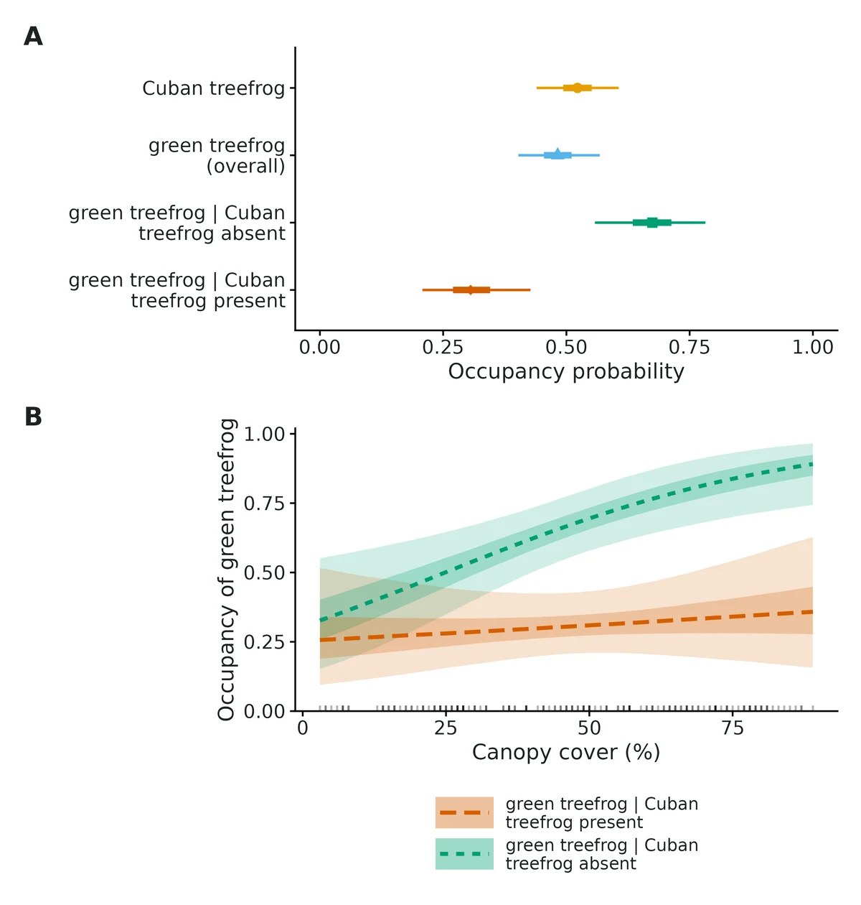
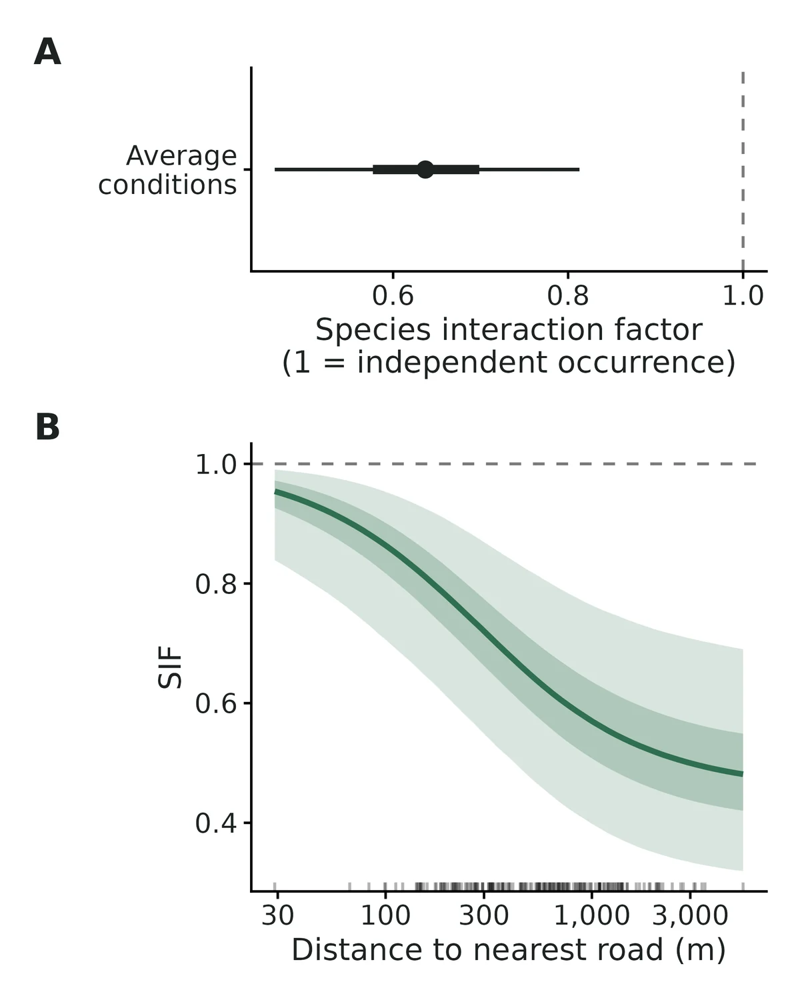
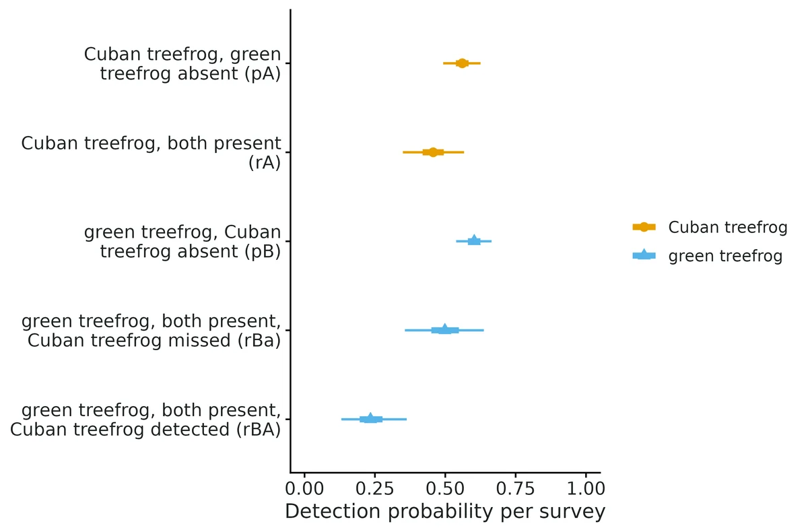
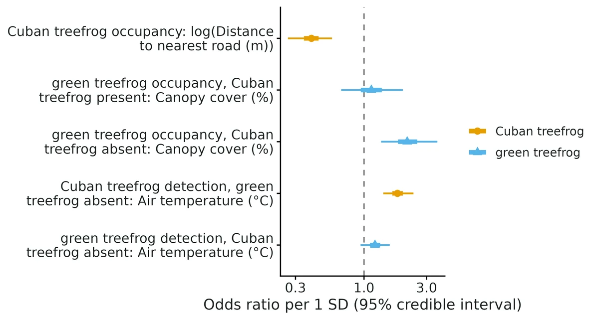

Two-species conditional occupancy (dominant/subordinate; Richmond et al. 2010, Waddle et al. 2010)
"Is the subordinate species (B) found at fewer sites where the dominant species (A) occurs than where it is absent, and is that pattern stronger in some habitats?", "Is B harder to detect on surveys when A is detected?", after allowing for both species being missed on some surveys.
Is this the right analysis?
Use it when
Repeated detection/non-detection surveys of TWO species at the same sites, where one species can reasonably be treated as dominant (predator, invasive competitor, larger species) and the question is whether the other (subordinate) species occupies sites less (or more) often where the dominant is present, and whether detection of one depends on the other; covariates on every occupancy and detection probability.
Not for
Three or more species, or no defensible dominant/subordinate ordering (use occu-rota, which is symmetric); counts or abundance of the dominant (abund-interactions); single species (occu-single); multi-season colonisation/extinction dynamics.
The data you need
Detection history of both species (site x survey 0/1, both recorded on every survey), site covariates, optional survey covariates.
What the example's main data file looks like:
| site_id | visit | date | observer | air_temp_c | pipes_checked | cuban_treefrog | green_treefrog |
|---|---|---|---|---|---|---|---|
| WCA-001 | 1 | 2023-06-05 | JHW | 22.9 | 10 | 1 | 0 |
| WCA-001 | 2 | 2023-06-29 | MS | 29.6 | 10 | 1 | 0 |
| WCA-001 | 3 | 2023-07-20 | JHW | 21.3 | 10 | 0 | 1 |
| WCA-001 | 4 | 2023-08-09 | MS | 23.7 | 10 | 0 | 0 |
| WCA-001 | 5 | 2023-08-29 | KR | 26.1 | 10 | 0 | 1 |
Not sure? Use the finder to compare modules.
The worked example
Do invasive Cuban treefrogs push out native green treefrogs? Two-species conditional occupancy from PVC-pipe surveys (simulated data)
A crew placed a cluster of 10 PVC pipes at each of 180 sites spread over wetlands and tree islands west of Miami (latitude 25.50-26.00 N, longitude 80.35-80.94 W). Each site was visited 5 times, about every 3 weeks, from 5 June to 31 August 2023. On each visit an observer checked all 10 pipes and recorded whether each species was found in any pipe (1) or not (0), and the air temperature. Some visits did not happen (flooded access, staff shortage): 60 of the 900 planned visits are missing.
The question: Is green treefrog occupancy lower at sites where Cuban treefrogs occur, and is green treefrog detection lower on visits when Cuban treefrogs are found in the pipes, after allowing for both species being missed?
The data are simulated, so the true answer is known and the analysis can be checked against it.
What the researcher typed
I have pipe-survey data for Cuban treefrogs and green treefrogs at 180 sites, 5 visits each, in pipe_surveys.csv, and site information (distance to road, canopy cover) in sites.csv. I want to know whether green treefrogs occupy fewer sites where Cuban treefrogs are present, and whether green treefrogs are harder to detect on visits when Cuban treefrogs are found. Cuban treefrog detection probably depends on air temperature. Please run the analysis and give me a report with figures I can use in a paper.
Run it yourself
Download the example data below and unzip it.
Open the unzipped folder in Claude Code (see Install).
Paste the prompt above. The agent checks the files, writes a plan, runs planted truth, fits the model and writes the report. You can compare your results with the ones below.
Contains pipe_surveys.csv, sites.csv, the settings file (config.yaml), a description of the data and a step-by-step walkthrough.
Study design details
| n sites | 180 |
|---|---|
| n visits per site | 5 |
| visits done | 840 |
| visits missed | 60 |
| prop missing | 0.067 |
| pipes per site | 10 |
| site covariates | log(dist_road_m) on psiA, canopy_pct on psiBA and psiBa |
| survey covariates | air_temp_c on pA and pB |
| sites cuban detected | 90 |
| sites green detected | 81 |
| sites both detected | 23 |
| data simulated | True |
| generator | dev/occu-waddle/make_example.R, set.seed(2010) |
Results from the example data

In plain language
- Where Cuban treefrog is present, green treefrog occupies 0.31 (95% CrI 0.21 to 0.43) of sites; where Cuban treefrog is absent, 0.67 (95% CrI 0.56 to 0.78).
- The odds of green treefrog occupying a site are 0.21 (95% CrI 0.10 to 0.44) times as high where Cuban treefrog is present.
- The species interaction factor is 0.64 (95% CrI 0.46 to 0.81): at average conditions the two species co-occur less often than expected if they were distributed independently (a segregation pattern).
- Occupancy of Cuban treefrog: the odds are multiplied by 0.40 (95% CrI 0.26 to 0.57) per 1 SD of log(dist_road_m); it decreases from 0.96 at 29 m to 0.09 at 5410 m.
- Occupancy of green treefrog where Cuban treefrog is absent: the odds are multiplied by 2.13 (95% CrI 1.35 to 3.63) per 1 SD of canopy cover (from 0.33 at 3% to 0.89 at 89%); where Cuban treefrog is present there is no clear change (1.14, 95% CrI 0.67 to 1.98).
- Where both occur, green treefrog is detected on 0.23 (95% CrI 0.13 to 0.36) of surveys that detected Cuban treefrog and on 0.50 (95% CrI 0.36 to 0.64) of surveys that missed it; log-odds ratio -1.18 (95% CrI -2.01 to -0.40). This is a detection effect, not an occupancy effect.
- A difference between psiBA and psiBa, or an SIF away from 1, is a co-occurrence pattern, consistent with competition or predation but equally with both species responding to habitat features not in the model; it does not by itself show that Cuban treefrog excludes green treefrog.
More figures



Figures are the module's default publication figures, reduced for the web. The report also saves them as PDF and full-resolution PNG.
Planted truth at the example's design
Before trusting the example's results, the module was run on many simulated data sets with the same design and known true values. Each row is one quantity: did the method get it back? (What the thresholds are.)
Every quantity checked passed planted truth at this design.
18 of 18 rows pass.
Show the full recovery table (18 rows)
| Quantity | True value | Average estimate | Bias | Coverage | Result |
|---|---|---|---|---|---|
| det_dominant_alone | 0.55 | 0.549 | -0.2% | 0.96 | ✓ PASS |
| det_dominant_alone_beta_effort | 0.378 | 0.394 | +4.3% | 0.95 | ✓ PASS |
| det_dominant_with_sub | 0.55 | 0.544 | -1.1% | 0.96 | ✓ PASS |
| det_log_odds_ratio_sub | -1.05 | -1.01 | +3.2% | 0.94 | ✓ PASS |
| det_sub_alone | 0.6 | 0.606 | +1.0% | 0.94 | ✓ PASS |
| det_sub_alone_beta_effort | 0.27 | 0.278 | +2.9% | 0.94 | ✓ PASS |
| det_sub_with_dom_detected | 0.3 | 0.305 | +1.7% | 0.94 | ✓ PASS |
| det_sub_with_dom_missed | 0.55 | 0.54 | -1.8% | 0.94 | ✓ PASS |
| occ_both | 0.131 | 0.134 | +2.2% | 0.94 | ✓ PASS |
| occ_dominant | 0.525 | 0.527 | +0.4% | 0.94 | ✓ PASS |
| occ_dominant_beta_habitat | -0.9 | -0.94 | -4.5% | 0.95 | ✓ PASS |
| occ_log_odds_ratio_sub | -1.9 | -1.95 | -2.5% | 0.96 | ✓ PASS |
| occ_sub_given_dom_absent | 0.69 | 0.698 | +1.2% | 0.96 | ✓ PASS |
| occ_sub_given_dom_absent_beta_habitat | 0.5 | 0.507 | +1.4% | 0.94 | ✓ PASS |
| occ_sub_given_dom_present | 0.25 | 0.256 | +2.4% | 0.96 | ✓ PASS |
| occ_sub_given_dom_present_beta_habitat | 0.6 | 0.608 | +1.3% | 0.94 | ✓ PASS |
| occ_subordinate | 0.459 | 0.465 | +1.3% | 0.95 | ✓ PASS |
| species_interaction_factor | 0.544 | 0.55 | +1.0% | 0.97 | ✓ PASS |
Limits that matter
- Power for the detection interaction is modest: 0.61 for a log-odds ratio of -1.05 at 180 sites x 5 visits.
- Canopy effects on green treefrog occupancy have low power (0.39 and 0.53); the psiBa slope magnitude is uncertain by about +-15% (VALIDATION.md sections 1, 8). In this data set the psiBA canopy slope was estimated at 0.13 vs true 0.60 (interval covers truth).
- The dominant/subordinate direction is assumed (Cuban treefrog dominant); the model does not test it.
- Co-occurrence is not interaction: shared unmeasured habitat drivers produce psiBA < psiBa (Blanchet et al. 2020).
- A detection interaction (rBA < rBa) can come from shared survey conditions affecting both species, not only behaviour.
- Small-sample bias toward 'no interaction' (psiBA, P(both), SIF) is documented at 60 sites; at this design (180 x 5) all were within +-2.5%.
- Not validated: detection < 0.3, factor covariates, covariates on rBA/rBa (none used here).
All known limits from the module's validation record
- Few sites (about 60): psiBA, P(both) and SIF are biased toward "no interaction" (+12% to +21%); report the direction, not the size, and see the power table before concluding "no effect". The ML engine fails on 10% of such data sets (boundary estimates).
- Logit slopes inflate in magnitude at small n (a known small-sample property of logistic regression on partly latent states). The default Normal(0, 1) slope prior keeps the bias within 10% at 200 sites; with
prior_sd: 2the psiBa slope is exaggerated by 27%. At 60 sites slopes are unreliable with either prior. - psiBa habitat slope is exaggerated by 10-17% at 100-300 sites (power runs and section 1; each within about 2 MCSE, so the gate passes at 200 sites, but the direction is consistent). Treat its magnitude as an upper estimate.
- Low power for the detection interaction: 0.59 at 200 sites for a log-odds ratio of -0.82; most studies cannot detect a detection interaction of this size.
- Strong habitat effects on psiBa are shrunk by the default Normal(0, 1) slope prior: a slope of -1.5 per SD was recovered as -1.33 (+11%, gate FAIL on bias, coverage 0.97) at 200 x 4 (section 8). With
prior_sd: 2or ML it is exaggerated by 12-13% instead. Treat the magnitude of the psiBa slope as uncertain by about +-15%; its sign and interval are reliable. - 3 surveys per site: P(both) over-estimated by 12% even with no interaction (150 sites, section 8); other estimands pass and the false-positive rate is 0.025-0.055.
- Direction is assumed: results are conditional on which species is called dominant; the module does not test the direction.
- Co-occurrence is not interaction: shared unmeasured habitat drivers produce psiBA < psiBa (Blanchet et al. 2020); the gate checks estimation, not causation.
- Not validated: low detection (< 0.3), 2 surveys (3 surveys: P(both) +12%, see above), factor covariates, survey covariates on rBA/rBa (a covariate on rA passed in section 8), long-format input in recovery (the reader is tested on the example only), model selection by AIC.
- Goodness of fit uses posterior predictive checks of co-detection classes and per-site detection counts; their power to detect violated closure or heterogeneity has not been measured.
Engine, references and full details
Engine: nimble (Bayesian, marginal likelihood; default) or hand-coded likelihood + optim (maximum likelihood).
References
- Richmond OMW, Hines JE, Beissinger SR (2010) Two-species occupancy models: a new parameterization applied to co-occurrence of secretive rails. Ecological Applications 20:2036-2046. doi:10.1890/09-0470.1
- Waddle JH, Dorazio RM, Walls SC, Rice KG, Beauchamp J, Schuman MJ, Mazzotti FJ (2010) A new parameterization for estimating co-occurrence of interacting species. Ecological Applications 20:1467-1475. doi:10.1890/09-0850.1
- MacKenzie DI, Bailey LL, Nichols JD (2004) Investigating species co-occurrence patterns when species are detected imperfectly. Journal of Animal Ecology 73:546-555. doi:10.1111/j.0021-8790.2004.00828.x
- MacKenzie DI, Lombardi JV, Tewes ME (2021) A note on investigating co-occurrence patterns and dynamics for many species, with imperfect detection and a log-linear modeling parameterization. Ecology and Evolution 11:8507-8515. doi:10.1002/ece3.7604
- Meredith M (2022) wiqid: Quick and dirty estimates for wildlife populations. R package 0.3.3, function occ2sps (cross-check).
- Rota CT et al. (2016) A multispecies occupancy model for two or more interacting species. Methods in Ecology and Evolution 7:1164-1173 (unmarked::occuMulti; cross-check).
- Blanchet FG, Cazelles K, Gravel D (2020) Co-occurrence is not evidence of ecological interactions. Ecology Letters 23:1050-1063. doi:10.1111/ele.13525
- Northrup JM, Gerber BD (2018) A comment on priors for Bayesian occupancy models. PLoS ONE 13:e0192819. doi:10.1371/journal.pone.0192819
- Gelman A, Jakulin A, Pittau MG, Su Y-S (2008) A weakly informative default prior distribution for logistic and other regression models. Annals of Applied Statistics 2:1360-1383. doi:10.1214/08-AOAS191
- de Valpine P et al. (2017) Programming with models: writing statistical algorithms for general model structures with NIMBLE. Journal of Computational and Graphical Statistics 26:403-413.